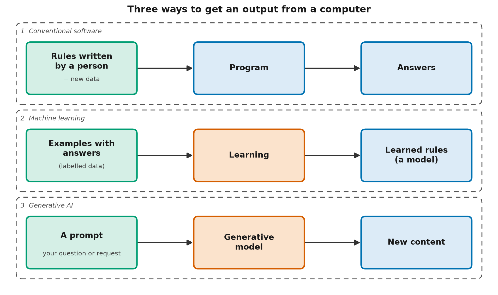

What Generative AI Is (and Isn't)
Learning objectives
By the end you will be able to:
- Explain the difference between conventional software, machine learning and generative AI.
- Identify whether a given tool is generating new content or classifying existing data.
- Describe, in one sentence, how a generative model produces its output.
- Recognize two things generative AI is often mistaken for: a search engine and a source of verified facts.
Why this matters
Generative AI is now built into tools that millions of people use to write, search, code and make decisions. People who misunderstand what it is tend to make one of two mistakes. Some trust it like a calculator, and repeat its confident errors. Others dismiss it as autocomplete, and miss what it does well. A clear picture of what it actually does, and doesn't do, is the foundation for everything else in this catalog.
🟢 Core idea (everyone)
Three ways to get an answer from a computer
Imagine you want a computer to sort email into "spam" and "not spam". There are three broad ways to get there, and they map onto the three ideas in this lesson.
1. Write the rules yourself. You decide: "if a message contains the word prize, it's spam." That's conventional software: a program that follows instructions a person wrote, step by step. It does exactly what it's told, which is both its strength and its weakness. Spammers soon learn to write "pr1ze".
2. Let the computer find the rules. You collect thousands of emails that people have already labelled "spam" or "not spam", and let the computer work out which patterns separate them. That's machine learning (ML): instead of writing the rules, you provide examples and a learning method, and the computer adjusts itself until it gets the examples right. The result of that process is called a model: a file of learned numbers that turns inputs into outputs. The process of adjusting it is called training, and the examples are the training data.
3. Let the computer write new email. Now flip the question. Instead of asking "is this email spam?", you ask "write a polite reply to this email." No list of right answers exists, because there are endless good replies. A generative AI system learns the patterns in a very large collection of text, then produces new text that follows those patterns. The instruction or question you give it is called a prompt.

Conventional software follows written rules, machine learning learns rules from examples, and generative AI uses learned patterns to create new content.
What "generative" really means
Artificial intelligence (AI) is the broad field of making machines do tasks we'd call intelligent: recognizing speech, planning a route, playing chess, answering questions. There is no single agreed definition. A widely used one, from the OECD, describes an AI system as a machine-based system that infers, from the input it receives, how to produce outputs such as predictions, content, recommendations or decisions.
Generative AI is the part of AI whose main output is content: text, images, audio, video or code. Most deployed AI before the mid-2010s was about judging things: is this spam, is this a cat, will this customer leave? Generative AI makes things.
Chat assistants, the systems you've probably heard of, are built on a language model: a model trained to continue text. A large language model (LLM) is one trained on an enormous amount of text, with billions of learned numbers. You'll meet both terms throughout the catalog.
How it produces text, in one sentence
A language model writes by repeatedly predicting a likely next piece of text, given everything written so far.
That's it. When you ask "What's the capital of Canada?", the model doesn't look the answer up. It produces the words that most plausibly follow your question, based on patterns in its training data. Because "Ottawa" followed questions like that many times in its training data, it's very likely to say "Ottawa".
An analogy. Think of a musician who has listened to thousands of jazz recordings and now improvises. They don't replay a recording. They produce new music that sounds right because they've absorbed the patterns.
Where the analogy breaks down: the musician knows what a song is, can hear their own mistakes, and can decide to break a rule on purpose. A generative model has no ears, no intentions and no built-in sense of right and wrong. It produces what is statistically plausible, and plausible isn't the same as true.
A worked example with real numbers
The code for this lesson builds a toy generator from just five sentences about the fictional town of Brindlewick:
| Training sentence |
|---|
| the library opens at nine |
| the market opens on saturday |
| the library closes at six |
| the ferry leaves at nine |
| the market closes at noon |
The generator only records which word followed which. After "library", it saw "opens" once and "closes" once, so it picks each with a probability of 1/2. After "at", it saw "nine" twice, "six" once and "noon" once, so it picks "nine" with a probability of 2/4 = 0.5.
Asked to write five different sentences, it produced:
| Generated sentence | In the training data? | True in Brindlewick? |
|---|---|---|
| the library closes at nine | no, new | no: it closes at six |
| the market closes at nine | no, new | no: it closes at noon |
| the ferry leaves at nine | yes | yes |
| the market closes at noon | yes | yes |
| the library closes at noon | no, new | no: it closes at six |
Every sentence is fluent. Three are new combinations nobody wrote, and all three are false. That's generative AI in miniature: it creates new content by recombining learned patterns, and nothing in that process checks the result against reality. Real models are vastly better at this, but the basic mechanism, and the basic risk, are the same.
What generative AI isn't
- It isn't a search engine. A search engine finds existing documents and shows you where they came from. A generative model produces new text from learned patterns. Some products combine the two (Level 3 covers how), but the model itself doesn't look things up.
- It isn't a database of facts. It doesn't store "Ottawa is the capital of Canada" as a record you can check. Facts are smeared across its learned numbers as patterns, which is why it can get common facts right and rare ones confidently wrong.
- It isn't a mind. Whether these systems "understand" anything is an open question (this lesson's 🔴 section and Level 7 return to it), but they don't have goals, experiences or intentions in the way people do. Fluent language makes it very easy to forget that.
- It isn't magic. Everything it does comes from data, mathematics and a lot of computation. By the end of Level 2 you'll have built a small one yourself.
🟡 How it works (practitioner)
The three approaches in code
code/three_ways.py implements all three approaches in about 120 lines of plain Python, using only the standard library. Run it from this lesson's folder:
python code/three_ways.py
1. Rules written by a person
'free prize meeting' -> spam
'team lunch moved' -> ok
'click to claim money' -> ok
2. Rules learned from 6 labelled examples
'free prize meeting' -> spam
'team lunch moved' -> ok
'click to claim money' -> spam
3. New text generated from 5 example sentences
the library closes at nine (new)
the market closes at nine (new)
the ferry leaves at nine
the market closes at noon
the library closes at noon (new)
Walk through what each part does:
- Rules.
rule_based_filterchecks for two hard-coded words. It misses "click to claim money", because nobody wrote a rule for "claim" or "money". - Learning.
learn_word_countscounts how often each word appears in spam and in normal messages.learned_filteradds up, for each word, its spam count minus its normal count. It catches "click to claim money", because "click", "claim" and "money" all appeared in the spam examples. Nobody wrote that rule. It came from the data. - Generation.
learn_next_wordsrecords, for every word, the list of words that followed it.generatestarts at a special<start>marker and repeatedly picks a random next word from that list until it reaches<end>. Words that followed more often appear more often in the list, so they're more likely to be picked.
The key lines of the generator:
def generate(follows, rng, max_words=10):
word, out = "<start>", []
while len(out) < max_words:
word = rng.choice(follows[word]) # pick a plausible next word
if word == "<end>":
break
out.append(word)
return " ".join(out)
Notice that the generator has no concept of a "sentence being true". It only knows "what can follow what". Large language models are enormously more sophisticated: they look at much more than the previous word, and they learn rich representations of meaning. But the outer loop, predict the next piece, append it, repeat, is the same one you just read.
Common pitfalls
- Treating fluency as accuracy. Grammatical, confident text is what these systems are built to produce. It's not evidence that the content is correct.
- Assuming the same prompt gives the same answer. Generation usually involves random
choices (here,
rng.choice). This example fixes the random seed so its output repeats exactly, but most real systems vary their answers unless configured not to. - Confusing the model with the product. A chat product may add search, tools, filters and memory around the model. When it cites a source, that came from the product's retrieval step, not from the model's memory. Level 3 builds exactly this.
🔴 Going deeper (expert)
Discriminative vs generative, formally
Classifiers and generators differ in what probability they model. Write x for an input (an email) and y for a label ("spam").
- A discriminative model learns p(y \mid x): the probability of each label, given the input. It answers "which category?".
- A generative model learns p(x), or p(x \mid c) for some condition c such as a prompt: a probability distribution over the data itself. Once you have that, you can sample from it, which means drawing new examples that are likely under the distribution.
Language models split text into pieces called tokens: whole words, parts of words or single characters, depending on the model (L2-01 builds a tokenizer). A language model factorizes the probability of a whole text x = (x_1, \dots, x_T) of T tokens into one next-token prediction at a time, using the chain rule of probability:
In words: the probability of a whole sentence is the probability of its first word, times the probability of the second word given the first, and so on. Generation samples x_1, then x_2 given x_1, and so on. The toy in this lesson makes a drastic simplification called a bigram assumption: p(x_t \mid x_1, \dots, x_{t-1}) \approx p(x_t \mid x_{t-1}). It looks back one word. Large language models condition on many thousands of previous tokens, and (as of November 2026) some systems on over a million.
Why "plausible but false" is structural, not a bug
The training objective rewards assigning high probability to text that looks like the training data. Nothing in that objective directly rewards truth. A sentence like "the library closes at nine" gets a reasonable probability because every local step in it is common. Larger models capture longer-range structure, so they make this kind of error far less often, but the objective still contains no explicit truth signal. Later techniques (post-training in L2-09, retrieval in Level 3, verification in Levels 4–5) are, in large part, ways of adding one.
The boundary is blurry in practice
Real systems mix the three approaches. A modern chat product might use a generative model to draft an answer, a discriminative classifier to filter unsafe content, and plain conventional code to call a calendar or run a calculation. Many valuable "AI features" are mostly conventional software with a model at one or two steps. Seeing which parts are which is a core skill for evaluating, securing and debugging these systems.
Open question (as of November 2026): whether next-token prediction at large scale yields something that deserves the word "understanding" is actively debated by researchers. Models clearly build internal representations that go beyond surface word statistics (Level 7 looks at the evidence), but how far that goes is unresolved.
Common misconceptions
- Myth: Generative AI looks answers up in a big database. Reality: A model produces text from learned patterns. Products sometimes add a search step, but the model itself doesn't consult a source.
- Myth: If the answer is detailed and confident, it's probably right. Reality: Detail and confidence come from the patterns of fluent text, not from checking facts. Confident errors are a normal failure mode.
- Myth: Generative AI is just copying and pasting from its training data. Reality: It mostly produces new combinations, as the toy example shows. It can reproduce memorized passages, especially text it saw many times (L0-03's exercise shows this).
- Myth: All AI is generative AI. Reality: Most deployed AI still classifies, ranks, forecasts or detects. Generative AI is one fast-growing part of the field.
Hands-on exercise
Goal: measure how often the toy generator writes something new, and see what happens when you give it more training sentences.
Open exercises/new_or_copied.py, complete the two TODOs, and run it. Then add three sentences of your own and run it again. No coding? Do it by hand instead: generate ten sentences with a die, using the "what followed what" lists, and tally how many are new.
Solution
The complete solution is in exercises/solutions/new_or_copied.py. Out of 200 generated sentences:
5 training sentences: 69 copies, 131 new (66% new)
8 training sentences: 39 copies, 161 new (80% new)
Two thirds of the output is already new with only five sentences. Adding sentences gives each word more possible successors, so the share of new combinations rises. For a model that looks back only one word, more data means more recombinations, and each one is a fresh chance to say something untrue. Larger models look much further back, which helps a great deal, but (as the 🔴 section explains) nothing in the training objective checks truth.
Check your understanding
- A program flags a bank transaction as suspicious because it's over a limit that an analyst typed into a settings file. Which approach is this?
A. A person wrote the rule (the limit). Nothing was learned from examples, and nothing new is being created. If the system had learned which transactions look suspicious from past fraud cases, it would be machine learning.
- Which of these are generative tasks? (choose all that apply)
A, C. Both create new content. B is classification (choosing a label), and D is forecasting (predicting one number). Both B and D are machine learning, but neither is generative.
- In the worked example, the generator wrote "the library closes at nine". Why?
B. "library closes" and "closes at" and "at nine" each appeared in true sentences. The generator chains likely steps without checking whether the whole claim is true. It didn't copy it (A), and it didn't look anything up (C): a generator has no list of facts to consult. That's the key difference from a search engine.
- A friend says: "I asked a chat assistant for a quote from a famous speech, and it gave me a perfect-sounding one, so it must be real." What would you tell them?Did your answer cover the main points?
A perfect-sounding quote is exactly what a generative model is designed to produce, whether or not the quote exists. The model predicts plausible text; it doesn't retrieve verified records. Check the quote against a reliable source, such as a transcript of the speech, before using it.
- Explain it to a colleague: in two or three sentences, explain how a language model produces an answer, and why that means it can be wrong while sounding right.Did your answer cover the main points?
A language model writes its answer one piece at a time, each time choosing a likely next piece of text given everything so far, based on patterns learned from a huge amount of training text. It's optimized to produce text that looks like its training data, not to check facts. So it can produce a fluent, confident answer that is simply a plausible combination rather than a verified truth.
Key terms
Further reading
- 🟢 Elements of AI — University of Helsinki and MinnaLearn. A free online course for non-specialists. Its first chapters cover "what is AI?" with a careful, hype-free approach. https://www.elementsofai.com/
- 🟢 Recommendation of the Council on Artificial Intelligence — OECD (2019, definition revised 2023). The source of the widely used definition of an "AI system" paraphrased above. https://legalinstruments.oecd.org/en/instruments/OECD-LEGAL-0449
- 🟡 Artificial Intelligence: A Modern Approach — Stuart Russell and Peter Norvig (4th ed., 2020). The standard university textbook. Chapter 1 surveys the many definitions of AI.
- 🔴 On the Opportunities and Risks of Foundation Models — Bommasani et al. (2021). A long report from Stanford on large pretrained models, their capabilities and risks. https://arxiv.org/abs/2108.07258
Next
- Next lesson: L0-02 AI, ML, Deep Learning, Generative AI: The Nested Map
- Related: L0-04 Capabilities, Limits and Responsible Use goes deeper into "plausible but false". L2-10 shows how real models choose the next token.